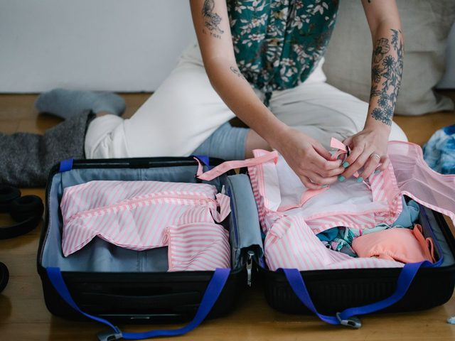
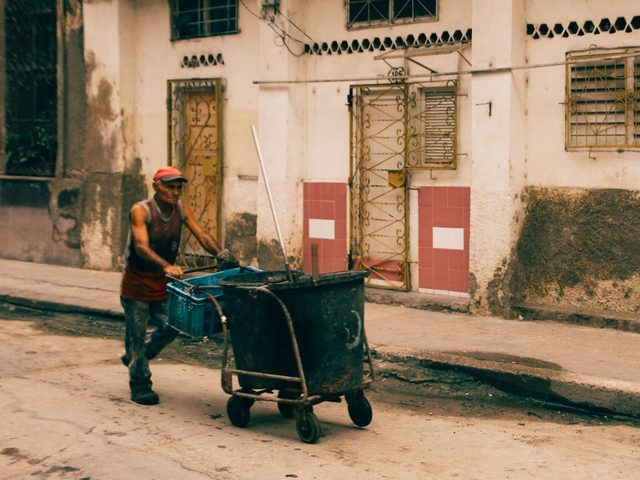
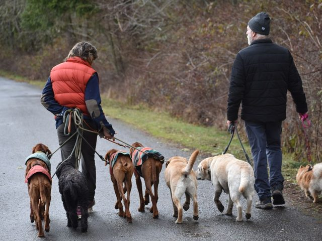

UNIT 37 · VOCABULARY
其他動詞 (3)
Other verbs (3)
38 個單字聽・唸・用
本單元單字一覽
日常動作的動詞，共 38 個（kiss 到 appear）。注意 take、make、put、run 的常用片語和不規則三態。
kisslaughleavelistmakemeetmissmoveopenpackparkpastepickplantpullpushputriserollrunrestshakeshoutsmokesignstandtaketellthrowtouchtypeusewalkwavemopagreeallowappear
每個字都有 🔊，先聽發音、跟著唸，再看例句。
單字 1–4

kiss
親吻v.
Mom kissed the baby on the cheek.
媽媽親了寶寶的臉頰。
媽媽親了寶寶的臉頰。
laugh
笑v.
We laughed at his funny story.
我們聽了他好笑的故事哈哈大笑。
我們聽了他好笑的故事哈哈大笑。
👋
leave
離開；留下v.
The train leaves at ten.
火車十點開。
火車十點開。
📝
list
列出；名單v./n.
Mom made a shopping list.
媽媽列了一張購物清單。
媽媽列了一張購物清單。
單字 5–8
🎂
make
做；使得v.
Let's make a cake for Dad.
我們來幫爸爸做蛋糕吧。
我們來幫爸爸做蛋糕吧。
🤝
meet
遇見；認識v.
Nice to meet you.
很高興認識你。
很高興認識你。
🚌
miss
想念；錯過v.
I missed the bus this morning.
我今天早上錯過了公車。
我今天早上錯過了公車。
🚚
move
移動；搬家v.
We moved to Kaohsiung last year.
我們去年搬到高雄。
我們去年搬到高雄。
單字 9–12
📖
open
打開v.
Open your book to page 15.
把書翻到第 15 頁。
把書翻到第 15 頁。

pack
打包v.
Pack your bag before the trip.
旅行前把行李打包好。
旅行前把行李打包好。

park
停（車）v.
You can't park your car here.
你不能把車停在這裡。
你不能把車停在這裡。
📎
paste
黏貼v.
Paste the picture on the paper.
把圖片貼在紙上。
把圖片貼在紙上。
單字 13–16

pick
挑選；採摘v.
We picked strawberries on the farm.
我們在農場摘草莓。
我們在農場摘草莓。

plant
種植v.
Let's plant some trees.
我們來種一些樹吧。
我們來種一些樹吧。

pull
拉v.
Pull the door to open it.
把門往外拉才能打開。
把門往外拉才能打開。

push
推v.
Don't push. Wait in line.
別推，排隊等。
別推，排隊等。
單字 17–20
📚
put
放v.
Put your books on the desk.
把你的書放在桌上。
把你的書放在桌上。
🌅
rise
升起；上升v.
The sun rises in the east.
太陽從東方升起。
太陽從東方升起。

roll
滾動；捲v.
The ball rolled down the hill.
球滾下山坡。
球滾下山坡。
🏃
run
跑；經營v.
He runs every morning.
他每天早上跑步。
他每天早上跑步。
單字 21–24
🛋️
rest
休息v.
Let's rest here for a while.
我們在這裡休息一下吧。
我們在這裡休息一下吧。

shake
搖動；握（手）v.
They shook hands and said hello.
他們握手打招呼。
他們握手打招呼。
📢
shout
喊叫v.
Don't shout. I can hear you.
別大叫，我聽得到。
別大叫，我聽得到。
🚭
smoke
抽菸；冒煙v.
Smoking is bad for your health.
抽菸對健康有害。
抽菸對健康有害。
單字 25–28

sign
簽名v.
Please sign your name here.
請在這裡簽名。
請在這裡簽名。
🧍
stand
站立；忍受v.
The boy standing there is my brother.
站在那裡的男孩是我弟弟。
站在那裡的男孩是我弟弟。
💊
take
拿；帶；搭乘；服（藥）v.
Take this medicine three times a day.
這個藥一天吃三次。
這個藥一天吃三次。
🗣️
tell
告訴；分辨v.
Please tell me the truth.
請告訴我實話。
請告訴我實話。
單字 29–32

throw
丟；扔v.
Don't throw trash on the ground.
不要把垃圾丟在地上。
不要把垃圾丟在地上。
👆
touch
接觸；摸v.
Please don't touch the paintings.
請不要觸摸畫作。
請不要觸摸畫作。

type
打字v./n.
She can type very fast.
她打字打得很快。
她打字打得很快。
🖊️
use
使用v.
May I use your pen?
我可以用你的筆嗎？
我可以用你的筆嗎？
單字 33–36

walk
走路；散步v.
I walk to school every day.
我每天走路上學。
我每天走路上學。

wave
揮手；揮動v.
She waved goodbye to us.
她向我們揮手道別。
她向我們揮手道別。

mop
拖地v.
Dad mopped the floor after dinner.
爸爸晚餐後拖了地。
爸爸晚餐後拖了地。
👍
agree
同意v.
I agree with you.
我同意你。
我同意你。
單字 37–38
✅
allow
允許v.
Smoking is not allowed here.
這裡不准抽菸。
這裡不准抽菸。
🌈
appear
出現；似乎v.
A rainbow appeared after the rain.
雨後出現了一道彩虹。
雨後出現了一道彩虹。
不規則動詞三態
| 原形 | 過去式 | 過去分詞 |
|---|---|---|
| leave | left | left |
| make | made | made |
| meet | met | met |
| put | put | put |
| rise | rose | risen |
| run | ran | run |
| shake | shook | shaken |
| stand | stood | stood |
| take | took | taken |
| tell | told | told |
| throw | threw | thrown |
常用片語
| 片語 | 意思 |
|---|---|
| pick up | 撿起；接（人） |
| put on／put down | 穿上／放下 |
| take a bus／take medicine | 搭公車／吃藥 |
| make a cake／make friends | 做蛋糕／交朋友 |
| shake hands | 握手 |
| laugh at | 嘲笑 |
| agree with | 同意某人 |
快問快答：中文 → 英文
1親吻kiss
2離開；留下leave
3做；使得make
4想念；錯過miss
5打開open
6停（車）park
7挑選；採摘pick
8拉pull
快問快答：英文 → 中文
1put放
2roll滾動；捲
3rest休息
4shout喊叫
5sign簽名
6take拿；帶；搭乘；服（藥）
7throw丟；扔
8type打字
學完了！接下來
複習方法
review
- 回到「📗 單字卡」，按「遮中文」自己考自己
- 再按「遮英文」，看中文說出英文
- 每個例句跟著 🔊 唸一次
準備好了
- 按右上角「📝 前往測驗」
- 測驗錯的題目要訂正到全對
- 訂正完成補送 1 點